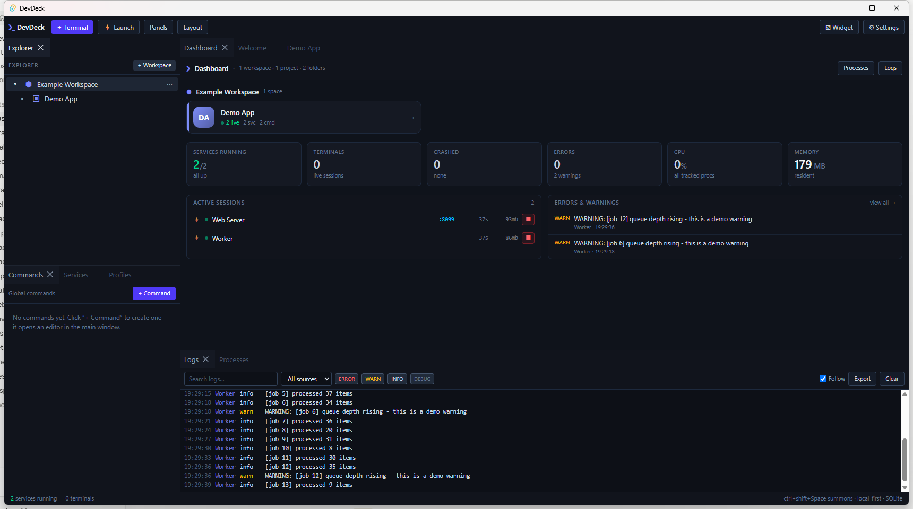
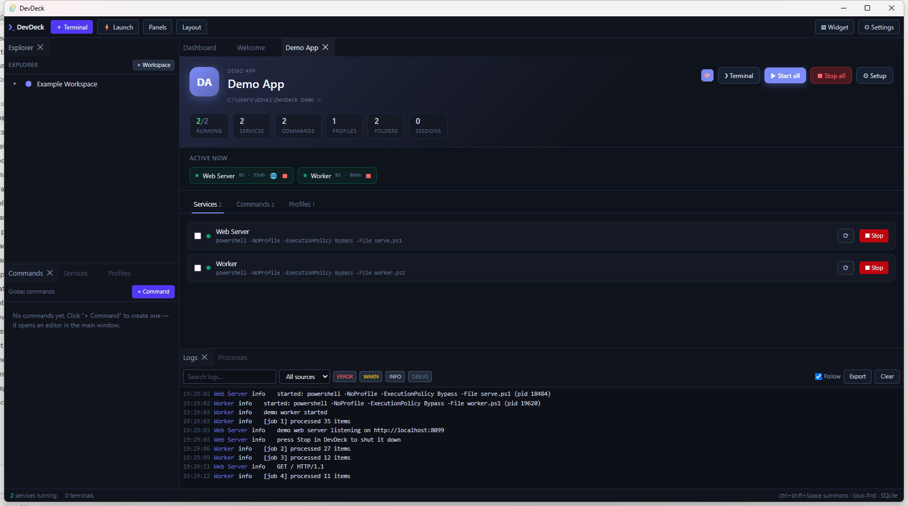
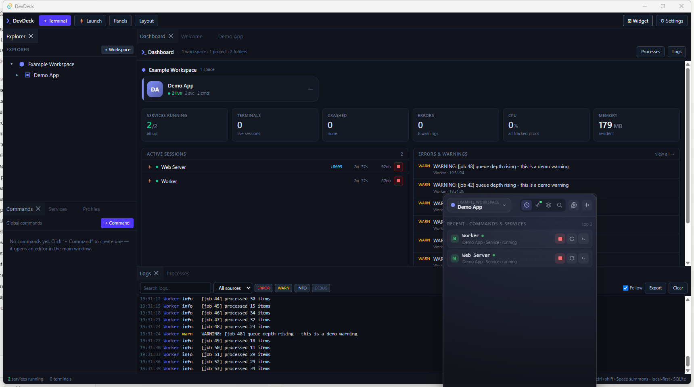

Your whole stack.
One window.
DevDeck is a local-first development command center for Windows. Start every service, watch what's running — including servers you (or your AI assistant) spin up outside it — and jump into any terminal, without hunting through six console windows.
No account. No server. No telemetry. Your data stays in a local SQLite file.

Built for the six-terminal morning
If you work in a monorepo or juggle several apps, starting the day means opening a pile of terminals and remembering a pile of commands. DevDeck turns that into one click.
Spaces
Organise work as Workspace → Project → Folder. Every command, service and terminal
runs in the right directory automatically — no more cd roulette.
Services
Define dev servers and workers once, then start, stop and restart them with live status, CPU, memory, uptime and ports.
Open in browser
Give a service a port and DevDeck adds one-click open. Click the port anywhere it appears — including on the floating widget — and your app opens on localhost.
Auto-detect sessions
Started a dev server from a shell, a script, or an AI assistant? DevDeck spots it, shows it with its real name, port and uptime, and offers to adopt it into a space.
Pick the shell
Run each command or service under the shell you want — cmd, PowerShell, pwsh, bash, or WSL — per item, not one global default.
Real terminals
Genuine PTY sessions (ConPTY) with xterm.js, docked as tabs. They live in the backend, so they survive UI reloads.
Logs & errors
Every service's stdout and stderr in one place, with severity detection, filtering, search and export — plus a dashboard feed of what broke.
Dockable layout
Drag, split, tab, float and resize any panel. Layouts autosave and restore, and launch profiles boot a whole stack in one action.
Every project gets its own home
Click a space and you get a page for it: what's running right now, its services, commands and profiles — and one button to boot the lot.
- Start all, stop all, or tick just the services you want
- Live uptime, memory and ports per service
- Pick an accent colour so spaces stay recognisable
- Open a terminal in the project root from anywhere

Summon it from anywhere
A floating, always-on-top widget on a global hotkey. Collapse it to a single icon, or to a live session panel — a coloured card per running session with its status, health, port, uptime and CPU, plus one-click open-in-browser, terminal and stop.
Ctrl+Shift+Spacefrom any app- Session panel colour-coded by space, with live health and uptime
- When nothing's running, drill Workspace → Project → service to start it
- Full mode adds recent, active, browse and fuzzy search

It knows what you started elsewhere
Spin up a dev server from a terminal, a script, or an AI assistant like Claude, and DevDeck notices — the listening port shows up in the widget with the tool's real name, its folder, uptime and CPU. No config, nothing to wire up.
- Detects known tools (Vite, Next, Uvicorn, Cargo…) or any dev-range port
- Lands in an Unassigned list and suggests the space it belongs to
- Open it in the browser or a terminal, or adopt it as a service
- Fully configurable — scope, ports, and a quiet toast when something new appears
Running in about a minute
Install it, load the example workspace, and see it work before wiring up your own repos.
Install
Download the installer from GitHub Releases and run it. Single app, no dependencies.
Load the example workspace
One click on the welcome screen builds a small demo project with a real web server and a background worker — so you can press Start and watch it actually work.
Add your project
Point DevDeck at a repo root, then add your services — pnpm dev:web,
cargo run, whatever you already type — and give them a port.
Start your day with one click
Hit Start all, or summon the widget with Ctrl+Shift+Space.
Free forever, built in spare time
DevDeck is MIT-licensed and always will be. If it saves you a bit of friction each morning, you can chip in — appreciated, never expected.